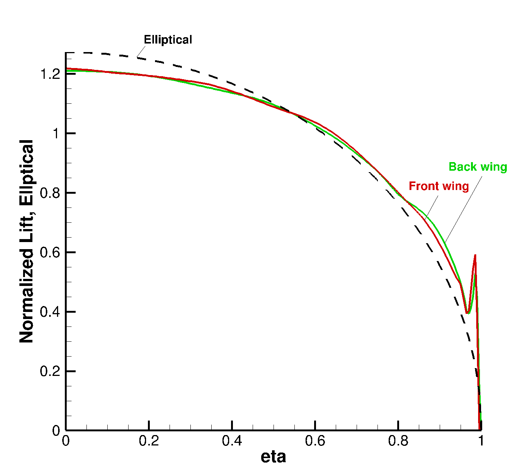
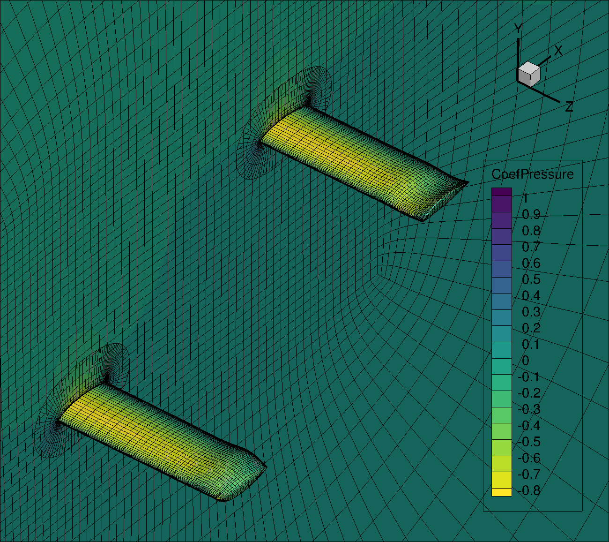

Optimization with ADflow
Introduction
Here, we will set up a twist and shape optimization case for both wings with ADflow.
Files
Navigate to the directory oversetopt/opt in your tutorial folder.
Copy the following files from the volume meshing directory:
$ cp ../mesh/volume/overset_combined.cgns .
Copy the following files from the FFDs directory:
$ cp ../ffd/ffd_front_wing.xyz .
$ cp ../ffd/ffd_back_wing.xyz .
$ cp ../ffd/ffd_parent.xyz .
Create the following empty runscript in the current directory:
aero_opt_tandem.py
Dissecting the ADflow runscript
Open the file aero_opt_tandem.py with your favorite text editor.
Then copy the following code blocks into this file.
First, as usual we have the initial imports and options. All these options should be familiar at this point. You may notice that we haven’t specified any overset options here. This is because the default values for the overset options work fine for this case.
from mpi4py import MPI
from baseclasses import AeroProblem
from adflow import ADFLOW
from pygeo import DVGeometry, DVConstraints
from pyoptsparse import Optimization, OPT
from idwarp import USMesh
from multipoint import multiPointSparse
MP = multiPointSparse(MPI.COMM_WORLD)
MP.addProcessorSet("cruise", nMembers=1, memberSizes=MPI.COMM_WORLD.size)
comm, setComm, setFlags, groupFlags, ptID = MP.createCommunicators()
gridFile = "overset_combined.cgns"
aeroOptions = {
# I/O Parameters
"gridFile": gridFile,
"outputDirectory": ".",
"monitorvariables": ["resrho", "cl", "cd", "cpu", "resturb"],
"writeTecplotSurfaceSolution": True,
# Physics Parameters
"equationType": "RANS",
# Solver Parameters
"MGCycle": "sg",
# ANK Solver Parameters
"useANKSolver": True,
"ankswitchtol": 1e5,
"anksecondordswitchtol": 1e-4,
"ankcoupledswitchtol": 1e-5,
# NK Solver Parameters
"useNKSolver": True,
"nkswitchtol": 1e-6,
# Termination Criteria
"L2Convergence": 1e-10,
"L2ConvergenceCoarse": 1e-2,
"nCycles": 10000,
# Adjoint Parameters
"adjointL2Convergence": 1e-10,
}
# Create solver
CFDSolver = ADFLOW(options=aeroOptions, comm=comm)
# Save the lift distribution for the front wing
CFDSolver.addLiftDistribution(200, "z", groupName="wing_front")
# Save the lift distribution for the back wing
CFDSolver.addLiftDistribution(200, "z", groupName="wing_back")
# Save the total lift distribution
CFDSolver.addLiftDistribution(200, "z")
ap = AeroProblem(
name="fc", mach=0.3, altitude=1000, areaRef=0.64 * 0.24 * 2, alpha=6.0, chordRef=0.24, evalFuncs=["cl", "cd"]
)
Next, we instantiate DVGeometry objects.
For the front and back wings, we specify their FFD grid-file names and also specify that they are child FFDs.
For the parent FFD, we use DVGeo.addChild() to provide the front and back wing DVGeometry objects as child FFDs.
As mentioned earlier, this parent-child approach is used because ADflow only accepts one DVGeometry object.
# Create DVGeometry object for front wing
FFDFile_front = "ffd_front_wing.xyz"
DVGeo_front = DVGeometry(FFDFile_front, child=True)
# Create reference axis for the front wing
nRefAxPts_front = DVGeo_front.addRefAxis("wing_front", xFraction=0.25, alignIndex="k")
nTwist_front = nRefAxPts_front
# Create DVGeometry object for back wing
FFDFile_back = "ffd_back_wing.xyz"
DVGeo_back = DVGeometry(FFDFile_back, child=True)
# Create reference axis for the back wing
nRefAxPts_back = DVGeo_back.addRefAxis("wing_back", xFraction=0.25, alignIndex="k")
nTwist_back = nRefAxPts_back
# Set up parent DVGeometry object
FFDFile_PARENT = "ffd_parent.xyz"
DVGeo_PARENT = DVGeometry(FFDFile_PARENT)
DVGeo_PARENT.addChild(DVGeo_front)
DVGeo_PARENT.addChild(DVGeo_back)
Now we create functions for the twist design variables for the front and back wings, and set up the design variables for twist and shape.
After that we only need to use CFDSolver.setDVGeo() to add the parent DVGeometry object.
Unlike the Aerodynamic Optimization tutorial, for this tandem-wing case, we allow the optimizer to twist the roots as well and do not use an angle-of-attack design variable (which changes the freestream-flow angle).
This allows effectively changing the angles of attack of the two wings independently.
# Set up global design variables
# We will allow the optimizer to twist the root as well
def twist_front(val, geo):
for i in range(0, nRefAxPts_front):
geo.rot_z["wing_front"].coef[i] = val[i]
# We will allow the optimizer to twist the root as well
def twist_back(val, geo):
for i in range(0, nRefAxPts_back):
geo.rot_z["wing_back"].coef[i] = val[i]
DVGeo_front.addGeoDVGlobal(
dvName="twist_front", value=[0] * nTwist_front, func=twist_front, lower=-5, upper=5, scale=0.1
)
DVGeo_back.addGeoDVGlobal(dvName="twist_back", value=[0] * nTwist_back, func=twist_back, lower=-5, upper=5, scale=0.1)
# Set up local design variables
DVGeo_front.addGeoDVLocal("local_front", lower=-0.05, upper=0.05, axis="y", scale=10)
DVGeo_back.addGeoDVLocal("local_back", lower=-0.05, upper=0.05, axis="y", scale=10)
# Add DVGeo object to CFD solver
CFDSolver.setDVGeo(DVGeo_PARENT)
Now we can set up the constraints.
For the DVConstraints object, we only need to set the parent DVGeometry object using DVCon.setDVGeo().
Then we add volume and thickness constraints.
We require separate constraints for the front and back wings.
Most of this should be familiar from the Aerodynamic Optimization tutorial.
When adding the leading and trailing edge constraints using addLeTeConstraints(), we use childIdx to specify which child geometry the constraints apply to (childIdx=0 would mean the first geometry that was added).
DVCon = DVConstraints(name="con")
DVCon.setDVGeo(DVGeo_PARENT)
# Only ADflow has the getTriangulatedSurface Function
DVCon.setSurface(CFDSolver.getTriangulatedMeshSurface())
# Volume constraints
# For the front wing
leList_front = [[0.01, 0, 0.001], [0.01, 0, 0.639]]
teList_front = [[0.239, 0, 0.001], [0.239, 0, 0.639]]
DVCon.addVolumeConstraint(leList_front, teList_front, 20, 20, lower=1.0)
# For the back wing
delta_x = 1.0
delta_y = 0.5
leList_back = [[0.01 + delta_x, 0 + delta_y, 0.001], [0.01 + delta_x, 0 + delta_y, 0.639]]
teList_back = [[0.239 + delta_x, 0 + delta_y, 0.001], [0.239 + delta_x, 0 + delta_y, 0.639]]
DVCon.addVolumeConstraint(leList_back, teList_back, 20, 20, lower=1.0)
# Thickness constraints
DVCon.addThicknessConstraints2D(leList_front, teList_front, 10, 10, lower=1.0)
DVCon.addThicknessConstraints2D(leList_back, teList_back, 10, 10, lower=1.0)
# Le/Te constraints
DVCon.addLeTeConstraints(0, "iLow", childIdx=0)
DVCon.addLeTeConstraints(0, "iHigh", childIdx=0)
DVCon.addLeTeConstraints(0, "iLow", childIdx=1)
DVCon.addLeTeConstraints(0, "iHigh", childIdx=1)
if comm.rank == 0:
DVCon.writeTecplot("constraints.dat")
Finally we have our functions of interest and optimization settings.
We only use addVariablesPyOpt() for the parent FFD.
The rest should look familiar.
meshOptions = {"gridFile": gridFile}
mesh = USMesh(options=meshOptions, comm=comm)
CFDSolver.setMesh(mesh)
def cruiseFuncs(x):
if comm.rank == 0:
print(x)
# Set design vars
DVGeo_PARENT.setDesignVars(x)
ap.setDesignVars(x)
# Run CFD
CFDSolver(ap)
# Evaluate functions
funcs = {}
DVCon.evalFunctions(funcs)
CFDSolver.evalFunctions(ap, funcs)
CFDSolver.checkSolutionFailure(ap, funcs)
if comm.rank == 0:
print(funcs)
return funcs
def cruiseFuncsSens(x, funcs):
funcsSens = {}
DVCon.evalFunctionsSens(funcsSens)
CFDSolver.evalFunctionsSens(ap, funcsSens)
CFDSolver.checkAdjointFailure(ap, funcsSens)
if comm.rank == 0:
print(funcsSens)
return funcsSens
def objCon(funcs, printOK):
# Assemble the objective and any additional constraints:
funcs["obj"] = funcs[ap["cd"]]
funcs["cl_con_" + ap.name] = funcs[ap["cl"]] - 0.5
if printOK:
print("funcs in obj:", funcs)
return funcs
# Create optimization problem
optProb = Optimization("opt", MP.obj, comm=comm)
# Add objective
optProb.addObj("obj", scale=50)
# Add variables from the AeroProblem
ap.addVariablesPyOpt(optProb)
# Add DVGeo variables
DVGeo_PARENT.addVariablesPyOpt(optProb)
# Add constraints
DVCon.addConstraintsPyOpt(optProb)
optProb.addCon("cl_con_" + ap.name, lower=0.0, upper=0.0, scale=10.0)
# The MP object needs the 'obj' and 'sens' function for each proc set,
# the optimization problem and what the objcon function is:
MP.setProcSetObjFunc("cruise", cruiseFuncs)
MP.setProcSetSensFunc("cruise", cruiseFuncsSens)
MP.setObjCon(objCon)
MP.setOptProb(optProb)
optProb.printSparsity()
# Set up optimizer
optOptions = {
"Major feasibility tolerance": 1.0e-4,
"Major optimality tolerance": 1.0e-4,
"Major iterations limit": 200,
"Difference interval": 1e-3,
"Hessian full memory": None,
"Function precision": 1.0e-8,
}
opt = OPT("snopt", options=optOptions)
# Run Optimization
sol = opt(optProb, MP.sens, storeHistory="opt.hst")
if comm.rank == 0:
print(sol)
Run it yourself!
Run the script:
$ mpirun -np 4 python aero_opt_tandem.py
This will take around 4–5 hrs to run on a 4 core desktop computer for the meshes used in this tutorial. But after a few iterations you can use the saved CGNS solution files and Tecplot to see how the geometry is being changed by the optimizer.
The final optimized lift distributions for this problem will look like the following:
{kind=link}
And the wings will look like this:
{kind=link}